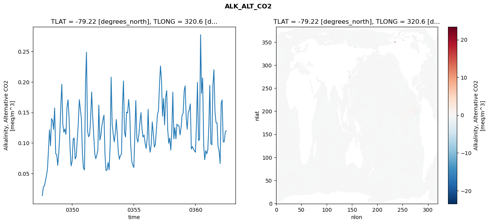
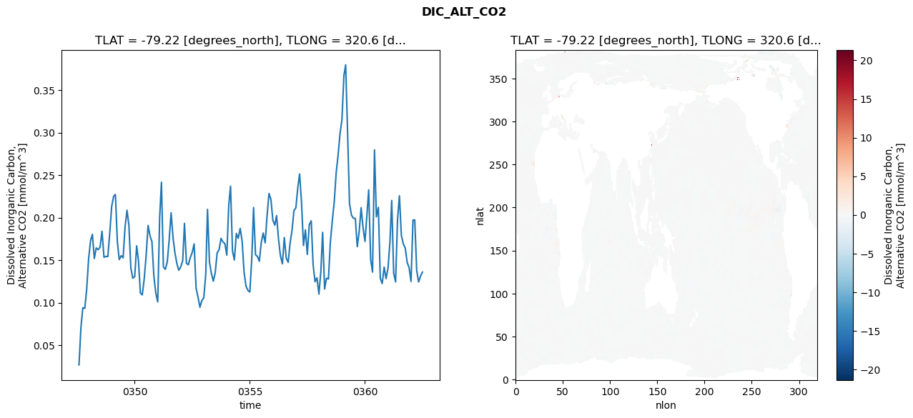
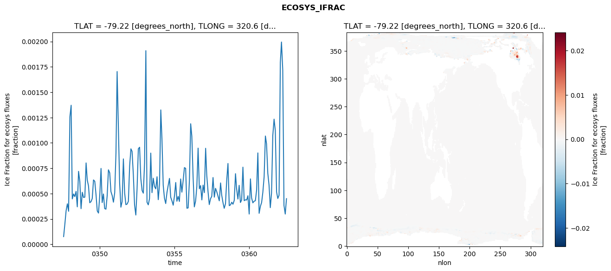
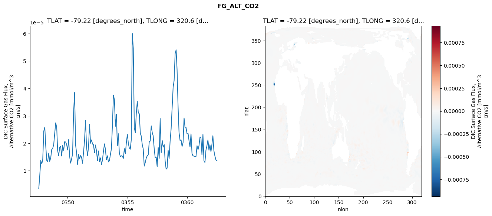

glb-dor_North_Atlantic_basin_020_1999-07-01_00082#
Simulation details#
Case: smyle.cdr-atlas-v0.glb-dor_North_Atlantic_basin_020_1999-07-01_00082.001
Basin: North_Atlantic_basin
Polygon: 20.0
Start date: 1999-07
Show code cell source Hide code cell source
import xarray as xr
import matplotlib.pyplot as plt
Show code cell source Hide code cell source
zarr_store = "/path/to/zarr/store"
# Parameters
zarr_store = "/global/cfs/projectdirs/m4746/Projects/Ocean-CDR-Atlas-v0/data/validation/smyle.cdr-atlas-v0.glb-dor_North_Atlantic_basin_020_1999-07-01_00082.001.validation.zarr"
Show code cell source Hide code cell source
%%time
ds_o = xr.open_zarr(zarr_store).compute()
ds_o
CPU times: user 599 ms, sys: 512 ms, total: 1.11 s
Wall time: 1.39 s
<xarray.Dataset> Size: 2MB
Dimensions: (nlat: 384, nlon: 320, time: 180)
Coordinates:
TLAT float64 8B -79.22
TLONG float64 8B 320.6
ULAT float64 8B -78.95
ULONG float64 8B 321.1
* time (time) object 1kB 0347-08-01 00:00:00 ... 0362-07-01 0...
z_t float32 4B 500.0
Dimensions without coordinates: nlat, nlon
Data variables:
ALK_ALT_CO2_diff (nlat, nlon) float32 492kB nan nan nan ... nan nan nan
ALK_ALT_CO2_rmse (time) float64 1kB 0.01362 0.02771 ... 0.1178 0.1201
DIC_ALT_CO2_diff (nlat, nlon) float32 492kB nan nan nan ... nan nan nan
DIC_ALT_CO2_rmse (time) float64 1kB 0.02688 0.07145 ... 0.1313 0.1361
ECOSYS_IFRAC_diff (nlat, nlon) float32 492kB nan nan nan ... nan nan nan
ECOSYS_IFRAC_rmse (time) float64 1kB 7.541e-05 0.0002012 ... 0.0004498
FG_ALT_CO2_diff (nlat, nlon) float32 492kB nan nan nan ... nan nan nan
FG_ALT_CO2_rmse (time) float64 1kB 3.496e-06 8.371e-06 ... 1.367e-05xarray.Dataset
- nlat: 384
- nlon: 320
- time: 180
- TLAT()float64-79.22
- long_name :
- array of t-grid latitudes
- units :
- degrees_north
array(-79.22052261)
- TLONG()float64320.6
- long_name :
- array of t-grid longitudes
- units :
- degrees_east
array(320.56250892)
- ULAT()float64-78.95
- long_name :
- array of u-grid latitudes
- units :
- degrees_north
array(-78.95289509)
- ULONG()float64321.1
- long_name :
- array of u-grid longitudes
- units :
- degrees_east
array(321.12500894)
- time(time)object0347-08-01 00:00:00 ... 0362-07-...
- bounds :
- time_bound
- long_name :
- time
array([cftime.DatetimeNoLeap(347, 8, 1, 0, 0, 0, 0, has_year_zero=True), cftime.DatetimeNoLeap(347, 9, 1, 0, 0, 0, 0, has_year_zero=True), cftime.DatetimeNoLeap(347, 10, 1, 0, 0, 0, 0, has_year_zero=True), cftime.DatetimeNoLeap(347, 11, 1, 0, 0, 0, 0, has_year_zero=True), cftime.DatetimeNoLeap(347, 12, 1, 0, 0, 0, 0, has_year_zero=True), cftime.DatetimeNoLeap(348, 1, 1, 0, 0, 0, 0, has_year_zero=True), cftime.DatetimeNoLeap(348, 2, 1, 0, 0, 0, 0, has_year_zero=True), cftime.DatetimeNoLeap(348, 3, 1, 0, 0, 0, 0, has_year_zero=True), cftime.DatetimeNoLeap(348, 4, 1, 0, 0, 0, 0, has_year_zero=True), cftime.DatetimeNoLeap(348, 5, 1, 0, 0, 0, 0, has_year_zero=True), cftime.DatetimeNoLeap(348, 6, 1, 0, 0, 0, 0, has_year_zero=True), cftime.DatetimeNoLeap(348, 7, 1, 0, 0, 0, 0, has_year_zero=True), cftime.DatetimeNoLeap(348, 8, 1, 0, 0, 0, 0, has_year_zero=True), cftime.DatetimeNoLeap(348, 9, 1, 0, 0, 0, 0, has_year_zero=True), cftime.DatetimeNoLeap(348, 10, 1, 0, 0, 0, 0, has_year_zero=True), cftime.DatetimeNoLeap(348, 11, 1, 0, 0, 0, 0, has_year_zero=True), cftime.DatetimeNoLeap(348, 12, 1, 0, 0, 0, 0, has_year_zero=True), cftime.DatetimeNoLeap(349, 1, 1, 0, 0, 0, 0, has_year_zero=True), cftime.DatetimeNoLeap(349, 2, 1, 0, 0, 0, 0, has_year_zero=True), cftime.DatetimeNoLeap(349, 3, 1, 0, 0, 0, 0, has_year_zero=True), cftime.DatetimeNoLeap(349, 4, 1, 0, 0, 0, 0, has_year_zero=True), cftime.DatetimeNoLeap(349, 5, 1, 0, 0, 0, 0, has_year_zero=True), cftime.DatetimeNoLeap(349, 6, 1, 0, 0, 0, 0, has_year_zero=True), cftime.DatetimeNoLeap(349, 7, 1, 0, 0, 0, 0, has_year_zero=True), cftime.DatetimeNoLeap(349, 8, 1, 0, 0, 0, 0, has_year_zero=True), cftime.DatetimeNoLeap(349, 9, 1, 0, 0, 0, 0, has_year_zero=True), cftime.DatetimeNoLeap(349, 10, 1, 0, 0, 0, 0, has_year_zero=True), cftime.DatetimeNoLeap(349, 11, 1, 0, 0, 0, 0, has_year_zero=True), cftime.DatetimeNoLeap(349, 12, 1, 0, 0, 0, 0, has_year_zero=True), cftime.DatetimeNoLeap(350, 1, 1, 0, 0, 0, 0, has_year_zero=True), cftime.DatetimeNoLeap(350, 2, 1, 0, 0, 0, 0, has_year_zero=True), cftime.DatetimeNoLeap(350, 3, 1, 0, 0, 0, 0, has_year_zero=True), cftime.DatetimeNoLeap(350, 4, 1, 0, 0, 0, 0, has_year_zero=True), cftime.DatetimeNoLeap(350, 5, 1, 0, 0, 0, 0, has_year_zero=True), cftime.DatetimeNoLeap(350, 6, 1, 0, 0, 0, 0, has_year_zero=True), cftime.DatetimeNoLeap(350, 7, 1, 0, 0, 0, 0, has_year_zero=True), cftime.DatetimeNoLeap(350, 8, 1, 0, 0, 0, 0, has_year_zero=True), cftime.DatetimeNoLeap(350, 9, 1, 0, 0, 0, 0, has_year_zero=True), cftime.DatetimeNoLeap(350, 10, 1, 0, 0, 0, 0, has_year_zero=True), cftime.DatetimeNoLeap(350, 11, 1, 0, 0, 0, 0, has_year_zero=True), cftime.DatetimeNoLeap(350, 12, 1, 0, 0, 0, 0, has_year_zero=True), cftime.DatetimeNoLeap(351, 1, 1, 0, 0, 0, 0, has_year_zero=True), cftime.DatetimeNoLeap(351, 2, 1, 0, 0, 0, 0, has_year_zero=True), cftime.DatetimeNoLeap(351, 3, 1, 0, 0, 0, 0, has_year_zero=True), cftime.DatetimeNoLeap(351, 4, 1, 0, 0, 0, 0, has_year_zero=True), cftime.DatetimeNoLeap(351, 5, 1, 0, 0, 0, 0, has_year_zero=True), cftime.DatetimeNoLeap(351, 6, 1, 0, 0, 0, 0, has_year_zero=True), cftime.DatetimeNoLeap(351, 7, 1, 0, 0, 0, 0, has_year_zero=True), cftime.DatetimeNoLeap(351, 8, 1, 0, 0, 0, 0, has_year_zero=True), cftime.DatetimeNoLeap(351, 9, 1, 0, 0, 0, 0, has_year_zero=True), cftime.DatetimeNoLeap(351, 10, 1, 0, 0, 0, 0, has_year_zero=True), cftime.DatetimeNoLeap(351, 11, 1, 0, 0, 0, 0, has_year_zero=True), cftime.DatetimeNoLeap(351, 12, 1, 0, 0, 0, 0, has_year_zero=True), cftime.DatetimeNoLeap(352, 1, 1, 0, 0, 0, 0, has_year_zero=True), cftime.DatetimeNoLeap(352, 2, 1, 0, 0, 0, 0, has_year_zero=True), cftime.DatetimeNoLeap(352, 3, 1, 0, 0, 0, 0, has_year_zero=True), cftime.DatetimeNoLeap(352, 4, 1, 0, 0, 0, 0, has_year_zero=True), cftime.DatetimeNoLeap(352, 5, 1, 0, 0, 0, 0, has_year_zero=True), cftime.DatetimeNoLeap(352, 6, 1, 0, 0, 0, 0, has_year_zero=True), cftime.DatetimeNoLeap(352, 7, 1, 0, 0, 0, 0, has_year_zero=True), cftime.DatetimeNoLeap(352, 8, 1, 0, 0, 0, 0, has_year_zero=True), cftime.DatetimeNoLeap(352, 9, 1, 0, 0, 0, 0, has_year_zero=True), cftime.DatetimeNoLeap(352, 10, 1, 0, 0, 0, 0, has_year_zero=True), cftime.DatetimeNoLeap(352, 11, 1, 0, 0, 0, 0, has_year_zero=True), cftime.DatetimeNoLeap(352, 12, 1, 0, 0, 0, 0, has_year_zero=True), cftime.DatetimeNoLeap(353, 1, 1, 0, 0, 0, 0, has_year_zero=True), cftime.DatetimeNoLeap(353, 2, 1, 0, 0, 0, 0, has_year_zero=True), cftime.DatetimeNoLeap(353, 3, 1, 0, 0, 0, 0, has_year_zero=True), cftime.DatetimeNoLeap(353, 4, 1, 0, 0, 0, 0, has_year_zero=True), cftime.DatetimeNoLeap(353, 5, 1, 0, 0, 0, 0, has_year_zero=True), cftime.DatetimeNoLeap(353, 6, 1, 0, 0, 0, 0, has_year_zero=True), cftime.DatetimeNoLeap(353, 7, 1, 0, 0, 0, 0, has_year_zero=True), cftime.DatetimeNoLeap(353, 8, 1, 0, 0, 0, 0, has_year_zero=True), cftime.DatetimeNoLeap(353, 9, 1, 0, 0, 0, 0, has_year_zero=True), cftime.DatetimeNoLeap(353, 10, 1, 0, 0, 0, 0, has_year_zero=True), cftime.DatetimeNoLeap(353, 11, 1, 0, 0, 0, 0, has_year_zero=True), cftime.DatetimeNoLeap(353, 12, 1, 0, 0, 0, 0, has_year_zero=True), cftime.DatetimeNoLeap(354, 1, 1, 0, 0, 0, 0, has_year_zero=True), cftime.DatetimeNoLeap(354, 2, 1, 0, 0, 0, 0, has_year_zero=True), cftime.DatetimeNoLeap(354, 3, 1, 0, 0, 0, 0, has_year_zero=True), cftime.DatetimeNoLeap(354, 4, 1, 0, 0, 0, 0, has_year_zero=True), cftime.DatetimeNoLeap(354, 5, 1, 0, 0, 0, 0, has_year_zero=True), cftime.DatetimeNoLeap(354, 6, 1, 0, 0, 0, 0, has_year_zero=True), cftime.DatetimeNoLeap(354, 7, 1, 0, 0, 0, 0, has_year_zero=True), cftime.DatetimeNoLeap(354, 8, 1, 0, 0, 0, 0, has_year_zero=True), cftime.DatetimeNoLeap(354, 9, 1, 0, 0, 0, 0, has_year_zero=True), cftime.DatetimeNoLeap(354, 10, 1, 0, 0, 0, 0, has_year_zero=True), cftime.DatetimeNoLeap(354, 11, 1, 0, 0, 0, 0, has_year_zero=True), cftime.DatetimeNoLeap(354, 12, 1, 0, 0, 0, 0, has_year_zero=True), cftime.DatetimeNoLeap(355, 1, 1, 0, 0, 0, 0, has_year_zero=True), cftime.DatetimeNoLeap(355, 2, 1, 0, 0, 0, 0, has_year_zero=True), cftime.DatetimeNoLeap(355, 3, 1, 0, 0, 0, 0, has_year_zero=True), cftime.DatetimeNoLeap(355, 4, 1, 0, 0, 0, 0, has_year_zero=True), cftime.DatetimeNoLeap(355, 5, 1, 0, 0, 0, 0, has_year_zero=True), cftime.DatetimeNoLeap(355, 6, 1, 0, 0, 0, 0, has_year_zero=True), cftime.DatetimeNoLeap(355, 7, 1, 0, 0, 0, 0, has_year_zero=True), cftime.DatetimeNoLeap(355, 8, 1, 0, 0, 0, 0, has_year_zero=True), cftime.DatetimeNoLeap(355, 9, 1, 0, 0, 0, 0, has_year_zero=True), cftime.DatetimeNoLeap(355, 10, 1, 0, 0, 0, 0, has_year_zero=True), cftime.DatetimeNoLeap(355, 11, 1, 0, 0, 0, 0, has_year_zero=True), cftime.DatetimeNoLeap(355, 12, 1, 0, 0, 0, 0, has_year_zero=True), cftime.DatetimeNoLeap(356, 1, 1, 0, 0, 0, 0, has_year_zero=True), cftime.DatetimeNoLeap(356, 2, 1, 0, 0, 0, 0, has_year_zero=True), cftime.DatetimeNoLeap(356, 3, 1, 0, 0, 0, 0, has_year_zero=True), cftime.DatetimeNoLeap(356, 4, 1, 0, 0, 0, 0, has_year_zero=True), cftime.DatetimeNoLeap(356, 5, 1, 0, 0, 0, 0, has_year_zero=True), cftime.DatetimeNoLeap(356, 6, 1, 0, 0, 0, 0, has_year_zero=True), cftime.DatetimeNoLeap(356, 7, 1, 0, 0, 0, 0, has_year_zero=True), cftime.DatetimeNoLeap(356, 8, 1, 0, 0, 0, 0, has_year_zero=True), cftime.DatetimeNoLeap(356, 9, 1, 0, 0, 0, 0, has_year_zero=True), cftime.DatetimeNoLeap(356, 10, 1, 0, 0, 0, 0, has_year_zero=True), cftime.DatetimeNoLeap(356, 11, 1, 0, 0, 0, 0, has_year_zero=True), cftime.DatetimeNoLeap(356, 12, 1, 0, 0, 0, 0, has_year_zero=True), cftime.DatetimeNoLeap(357, 1, 1, 0, 0, 0, 0, has_year_zero=True), cftime.DatetimeNoLeap(357, 2, 1, 0, 0, 0, 0, has_year_zero=True), cftime.DatetimeNoLeap(357, 3, 1, 0, 0, 0, 0, has_year_zero=True), cftime.DatetimeNoLeap(357, 4, 1, 0, 0, 0, 0, has_year_zero=True), cftime.DatetimeNoLeap(357, 5, 1, 0, 0, 0, 0, has_year_zero=True), cftime.DatetimeNoLeap(357, 6, 1, 0, 0, 0, 0, has_year_zero=True), cftime.DatetimeNoLeap(357, 7, 1, 0, 0, 0, 0, has_year_zero=True), cftime.DatetimeNoLeap(357, 8, 1, 0, 0, 0, 0, has_year_zero=True), cftime.DatetimeNoLeap(357, 9, 1, 0, 0, 0, 0, has_year_zero=True), cftime.DatetimeNoLeap(357, 10, 1, 0, 0, 0, 0, has_year_zero=True), cftime.DatetimeNoLeap(357, 11, 1, 0, 0, 0, 0, has_year_zero=True), cftime.DatetimeNoLeap(357, 12, 1, 0, 0, 0, 0, has_year_zero=True), cftime.DatetimeNoLeap(358, 1, 1, 0, 0, 0, 0, has_year_zero=True), cftime.DatetimeNoLeap(358, 2, 1, 0, 0, 0, 0, has_year_zero=True), cftime.DatetimeNoLeap(358, 3, 1, 0, 0, 0, 0, has_year_zero=True), cftime.DatetimeNoLeap(358, 4, 1, 0, 0, 0, 0, has_year_zero=True), cftime.DatetimeNoLeap(358, 5, 1, 0, 0, 0, 0, has_year_zero=True), cftime.DatetimeNoLeap(358, 6, 1, 0, 0, 0, 0, has_year_zero=True), cftime.DatetimeNoLeap(358, 7, 1, 0, 0, 0, 0, has_year_zero=True), cftime.DatetimeNoLeap(358, 8, 1, 0, 0, 0, 0, has_year_zero=True), cftime.DatetimeNoLeap(358, 9, 1, 0, 0, 0, 0, has_year_zero=True), cftime.DatetimeNoLeap(358, 10, 1, 0, 0, 0, 0, has_year_zero=True), cftime.DatetimeNoLeap(358, 11, 1, 0, 0, 0, 0, has_year_zero=True), cftime.DatetimeNoLeap(358, 12, 1, 0, 0, 0, 0, has_year_zero=True), cftime.DatetimeNoLeap(359, 1, 1, 0, 0, 0, 0, has_year_zero=True), cftime.DatetimeNoLeap(359, 2, 1, 0, 0, 0, 0, has_year_zero=True), cftime.DatetimeNoLeap(359, 3, 1, 0, 0, 0, 0, has_year_zero=True), cftime.DatetimeNoLeap(359, 4, 1, 0, 0, 0, 0, has_year_zero=True), cftime.DatetimeNoLeap(359, 5, 1, 0, 0, 0, 0, has_year_zero=True), cftime.DatetimeNoLeap(359, 6, 1, 0, 0, 0, 0, has_year_zero=True), cftime.DatetimeNoLeap(359, 7, 1, 0, 0, 0, 0, has_year_zero=True), cftime.DatetimeNoLeap(359, 8, 1, 0, 0, 0, 0, has_year_zero=True), cftime.DatetimeNoLeap(359, 9, 1, 0, 0, 0, 0, has_year_zero=True), cftime.DatetimeNoLeap(359, 10, 1, 0, 0, 0, 0, has_year_zero=True), cftime.DatetimeNoLeap(359, 11, 1, 0, 0, 0, 0, has_year_zero=True), cftime.DatetimeNoLeap(359, 12, 1, 0, 0, 0, 0, has_year_zero=True), cftime.DatetimeNoLeap(360, 1, 1, 0, 0, 0, 0, has_year_zero=True), cftime.DatetimeNoLeap(360, 2, 1, 0, 0, 0, 0, has_year_zero=True), cftime.DatetimeNoLeap(360, 3, 1, 0, 0, 0, 0, has_year_zero=True), cftime.DatetimeNoLeap(360, 4, 1, 0, 0, 0, 0, has_year_zero=True), cftime.DatetimeNoLeap(360, 5, 1, 0, 0, 0, 0, has_year_zero=True), cftime.DatetimeNoLeap(360, 6, 1, 0, 0, 0, 0, has_year_zero=True), cftime.DatetimeNoLeap(360, 7, 1, 0, 0, 0, 0, has_year_zero=True), cftime.DatetimeNoLeap(360, 8, 1, 0, 0, 0, 0, has_year_zero=True), cftime.DatetimeNoLeap(360, 9, 1, 0, 0, 0, 0, has_year_zero=True), cftime.DatetimeNoLeap(360, 10, 1, 0, 0, 0, 0, has_year_zero=True), cftime.DatetimeNoLeap(360, 11, 1, 0, 0, 0, 0, has_year_zero=True), cftime.DatetimeNoLeap(360, 12, 1, 0, 0, 0, 0, has_year_zero=True), cftime.DatetimeNoLeap(361, 1, 1, 0, 0, 0, 0, has_year_zero=True), cftime.DatetimeNoLeap(361, 2, 1, 0, 0, 0, 0, has_year_zero=True), cftime.DatetimeNoLeap(361, 3, 1, 0, 0, 0, 0, has_year_zero=True), cftime.DatetimeNoLeap(361, 4, 1, 0, 0, 0, 0, has_year_zero=True), cftime.DatetimeNoLeap(361, 5, 1, 0, 0, 0, 0, has_year_zero=True), cftime.DatetimeNoLeap(361, 6, 1, 0, 0, 0, 0, has_year_zero=True), cftime.DatetimeNoLeap(361, 7, 1, 0, 0, 0, 0, has_year_zero=True), cftime.DatetimeNoLeap(361, 8, 1, 0, 0, 0, 0, has_year_zero=True), cftime.DatetimeNoLeap(361, 9, 1, 0, 0, 0, 0, has_year_zero=True), cftime.DatetimeNoLeap(361, 10, 1, 0, 0, 0, 0, has_year_zero=True), cftime.DatetimeNoLeap(361, 11, 1, 0, 0, 0, 0, has_year_zero=True), cftime.DatetimeNoLeap(361, 12, 1, 0, 0, 0, 0, has_year_zero=True), cftime.DatetimeNoLeap(362, 1, 1, 0, 0, 0, 0, has_year_zero=True), cftime.DatetimeNoLeap(362, 2, 1, 0, 0, 0, 0, has_year_zero=True), cftime.DatetimeNoLeap(362, 3, 1, 0, 0, 0, 0, has_year_zero=True), cftime.DatetimeNoLeap(362, 4, 1, 0, 0, 0, 0, has_year_zero=True), cftime.DatetimeNoLeap(362, 5, 1, 0, 0, 0, 0, has_year_zero=True), cftime.DatetimeNoLeap(362, 6, 1, 0, 0, 0, 0, has_year_zero=True), cftime.DatetimeNoLeap(362, 7, 1, 0, 0, 0, 0, has_year_zero=True)], dtype=object) - z_t()float32500.0
- long_name :
- depth from surface to midpoint of layer
- positive :
- down
- units :
- centimeters
- valid_max :
- 537500.0
- valid_min :
- 500.0
array(500., dtype=float32)
- ALK_ALT_CO2_diff(nlat, nlon)float32nan nan nan nan ... nan nan nan nan
- cell_methods :
- time: mean
- grid_loc :
- 3111
- long_name :
- Alkalinity, Alternative CO2
- units :
- meq/m^3
array([[ nan, nan, nan, ..., nan, nan, nan], [ nan, nan, nan, ..., nan, nan, nan], [0.00732422, 0.00732422, 0.01806641, ..., nan, nan, nan], ..., [ nan, nan, nan, ..., nan, nan, nan], [ nan, nan, nan, ..., nan, nan, nan], [ nan, nan, nan, ..., nan, nan, nan]], dtype=float32) - ALK_ALT_CO2_rmse(time)float640.01362 0.02771 ... 0.1178 0.1201
- cell_methods :
- time: mean
- grid_loc :
- 3111
- long_name :
- Alkalinity, Alternative CO2
- units :
- meq/m^3
array([0.01362308, 0.02771025, 0.02941789, 0.03739328, 0.04607456, 0.05749535, 0.08958625, 0.12147458, 0.09530041, 0.1399376 , 0.1365414 , 0.12202849, 0.15737176, 0.08192894, 0.08100952, 0.06323814, 0.08356026, 0.11539258, 0.16284873, 0.1963064 , 0.12996651, 0.11751879, 0.12287209, 0.11405936, 0.15836685, 0.17076249, 0.14353502, 0.08895429, 0.06233749, 0.06991928, 0.1064541 , 0.10824201, 0.07359401, 0.07761114, 0.10503316, 0.13042695, 0.17089344, 0.15505361, 0.14006948, 0.08310068, 0.05867287, 0.05564327, 0.19844153, 0.2487773 , 0.12055592, 0.11014716, 0.11286249, 0.13893508, 0.18366088, 0.14265481, 0.11309501, 0.0827036 , 0.07389754, 0.07994466, 0.08859638, 0.1619097 , 0.10440664, 0.11239515, 0.12860306, 0.13770475, 0.14562307, 0.07931648, 0.05468367, 0.05559054, 0.06790429, 0.05588324, 0.09858604, 0.20796129, 0.13048962, 0.11482739, 0.10163992, 0.11513522, 0.13851482, 0.11201729, 0.08369437, 0.07309882, 0.07959886, 0.08128198, 0.16317098, 0.20176116, 0.11704559, 0.109755 , 0.15059031, 0.14919935, 0.17131521, 0.1518782 , 0.09702069, 0.06973859, 0.0634155 , 0.05962909, 0.1138843 , 0.16962306, 0.1075764 , 0.10116892, 0.11456916, 0.13369704, 0.14966234, 0.12266156, 0.10966375, 0.11292242, 0.10002902, 0.09083302, 0.10709738, 0.15503911, 0.09673786, 0.08476428, 0.09809172, 0.13441549, 0.11548184, 0.09300262, 0.09775575, 0.12235047, 0.14615532, 0.15320466, 0.19649307, 0.22630104, 0.20248473, 0.14381157, 0.17300272, 0.12947195, 0.17460505, 0.18594684, 0.12209233, 0.09931558, 0.10800598, 0.08827645, 0.12119315, 0.18321521, 0.10660274, 0.12512297, 0.10651329, 0.1307273 , 0.12860407, 0.12770393, 0.11305499, 0.12524946, 0.14534731, 0.14874541, 0.18558509, 0.19359302, 0.1416231 , 0.12252676, 0.14938167, 0.15424037, 0.16408128, 0.08985939, 0.09425463, 0.09017165, 0.08708691, 0.08462155, 0.13472082, 0.19929178, 0.10390407, 0.10543628, 0.27747318, 0.18095248, 0.20663315, 0.09627465, 0.07239686, 0.08725848, 0.0820602 , 0.08887314, 0.1283659 , 0.19462973, 0.09900716, 0.09677621, 0.1951561 , 0.21999094, 0.15168199, 0.13337808, 0.1329928 , 0.09367305, 0.08684671, 0.0661832 , 0.16525437, 0.17052095, 0.10161243, 0.10184022, 0.11776695, 0.12009439]) - DIC_ALT_CO2_diff(nlat, nlon)float32nan nan nan nan ... nan nan nan nan
- cell_methods :
- time: mean
- grid_loc :
- 3111
- long_name :
- Dissolved Inorganic Carbon, Alternative CO2
- units :
- mmol/m^3
array([[ nan, nan, nan, ..., nan, nan, nan], [ nan, nan, nan, ..., nan, nan, nan], [0.00170898, 0.00292969, 0.00708008, ..., nan, nan, nan], ..., [ nan, nan, nan, ..., nan, nan, nan], [ nan, nan, nan, ..., nan, nan, nan], [ nan, nan, nan, ..., nan, nan, nan]], dtype=float32) - DIC_ALT_CO2_rmse(time)float640.02688 0.07145 ... 0.1313 0.1361
- cell_methods :
- time: mean
- grid_loc :
- 3111
- long_name :
- Dissolved Inorganic Carbon, Alternative CO2
- units :
- mmol/m^3
array([0.02687724, 0.07145315, 0.09414076, 0.09334838, 0.11613288, 0.15221109, 0.17307469, 0.18049975, 0.15204394, 0.16446904, 0.16241307, 0.16540857, 0.18419286, 0.15350136, 0.15455311, 0.15426013, 0.18164639, 0.21314923, 0.22530994, 0.22737483, 0.17183656, 0.15076401, 0.15532254, 0.15286448, 0.18907178, 0.20879035, 0.19098437, 0.14087998, 0.1288831 , 0.13065774, 0.16697169, 0.14997977, 0.11147887, 0.10924419, 0.12837897, 0.15517562, 0.19087928, 0.17869805, 0.17192756, 0.13148015, 0.11141365, 0.10104962, 0.20127421, 0.24173962, 0.14220063, 0.13927441, 0.14791535, 0.17362144, 0.20582699, 0.17612902, 0.15869111, 0.14581328, 0.13827058, 0.14227342, 0.14951683, 0.193385 , 0.14639293, 0.14464726, 0.15310814, 0.15902561, 0.16917276, 0.11735607, 0.10689642, 0.09471574, 0.10256943, 0.10575601, 0.13328314, 0.20982686, 0.14764714, 0.13473852, 0.12532973, 0.1350564 , 0.15867402, 0.16247712, 0.17576328, 0.17143288, 0.16960711, 0.15602351, 0.21512079, 0.23713072, 0.16110446, 0.15034135, 0.18153416, 0.17580629, 0.18749706, 0.17224699, 0.13667184, 0.11943029, 0.11464224, 0.11263499, 0.15233178, 0.21207478, 0.15643685, 0.15448196, 0.14876581, 0.17084224, 0.18197642, 0.17045487, 0.20250729, 0.22849244, 0.22150255, 0.19703407, 0.19124391, 0.20247073, 0.17440419, 0.15533665, 0.14579827, 0.17669178, 0.15253181, 0.14755155, 0.1701915 , 0.18527652, 0.20825722, 0.21183676, 0.23605167, 0.25149982, 0.21676362, 0.1673361 , 0.18575193, 0.15689423, 0.19187342, 0.19636311, 0.14471193, 0.12469986, 0.12939955, 0.11015852, 0.13710053, 0.18280178, 0.11610062, 0.12883184, 0.12794296, 0.17092842, 0.19618547, 0.21854467, 0.25252856, 0.27357076, 0.29844108, 0.31541639, 0.36716261, 0.37983095, 0.29865159, 0.21652354, 0.20310409, 0.19945077, 0.19921771, 0.16591932, 0.18370557, 0.21180385, 0.18874278, 0.17214631, 0.20327715, 0.23277498, 0.15141505, 0.13602221, 0.27978921, 0.20101 , 0.21222869, 0.1285638 , 0.12256362, 0.141904 , 0.12835709, 0.14047562, 0.17164444, 0.22027177, 0.13476447, 0.12449755, 0.19748019, 0.22579537, 0.17917534, 0.16909211, 0.16449398, 0.14740224, 0.14146728, 0.12502565, 0.19726472, 0.19745686, 0.13789204, 0.12441615, 0.13129902, 0.13608171]) - ECOSYS_IFRAC_diff(nlat, nlon)float32nan nan nan nan ... nan nan nan nan
- cell_methods :
- time: mean
- grid_loc :
- 2110
- long_name :
- Ice Fraction for ecosys fluxes
- units :
- fraction
array([[ nan, nan, nan, ..., nan, nan, nan], [ nan, nan, nan, ..., nan, nan, nan], [3.761053e-05, 9.006262e-05, 3.874302e-05, ..., nan, nan, nan], ..., [ nan, nan, nan, ..., nan, nan, nan], [ nan, nan, nan, ..., nan, nan, nan], [ nan, nan, nan, ..., nan, nan, nan]], dtype=float32) - ECOSYS_IFRAC_rmse(time)float647.541e-05 0.0002012 ... 0.0004498
- cell_methods :
- time: mean
- grid_loc :
- 2110
- long_name :
- Ice Fraction for ecosys fluxes
- units :
- fraction
array([7.54137881e-05, 2.01217092e-04, 3.31177501e-04, 3.98842060e-04, 3.25308933e-04, 1.25552916e-03, 1.37123961e-03, 4.47420014e-04, 4.95776062e-04, 4.70053223e-04, 5.21584385e-04, 3.69070381e-04, 7.19203157e-04, 6.17983048e-04, 3.50881222e-04, 5.12470629e-04, 4.61568883e-04, 4.64727721e-04, 8.02123718e-04, 6.34902828e-04, 5.75309188e-04, 4.09633456e-04, 4.19695690e-04, 4.50794301e-04, 6.34180898e-04, 6.21284857e-04, 4.91479807e-04, 3.28432904e-04, 3.07557223e-04, 4.83902062e-04, 7.47975152e-04, 4.11068584e-04, 4.95775038e-04, 3.52083691e-04, 3.45964644e-04, 4.77984970e-04, 7.34332604e-04, 7.04725329e-04, 5.18916336e-04, 4.79266977e-04, 4.14993752e-04, 5.08420557e-04, 9.00797005e-04, 1.70398942e-03, 1.15749026e-03, 6.07794477e-04, 3.65626981e-04, 4.21169298e-04, 8.41815709e-04, 5.05372925e-04, 3.90821499e-04, 3.96685931e-04, 4.23920689e-04, 7.74869844e-04, 9.41396943e-04, 9.15851551e-04, 6.87769296e-04, 3.87085887e-04, 2.88316522e-04, 5.44507317e-04, 9.41188232e-04, 9.57003810e-04, 6.48596962e-04, 5.29839363e-04, 5.03867254e-04, 8.06531453e-04, 1.90965531e-03, 4.15115927e-04, 3.88645143e-04, 4.48936484e-04, 8.99290507e-04, 5.09106282e-04, 6.51361122e-04, 5.68555377e-04, 5.46462378e-04, 6.65924190e-04, 4.39734229e-04, 5.90448043e-04, 1.32515405e-03, 1.04278153e-03, ... 3.58664721e-04, 6.31831270e-04, 1.18857055e-03, 1.06656202e-03, 6.64200979e-04, 3.68739434e-04, 4.26150380e-04, 5.67862962e-04, 9.48200400e-04, 5.46936681e-04, 5.78435071e-04, 4.37415348e-04, 5.83169276e-04, 5.09137061e-04, 9.46610080e-04, 6.78805906e-04, 5.18592545e-04, 3.91285316e-04, 4.49218261e-04, 4.73260226e-04, 6.58193385e-04, 4.64666144e-04, 5.51532198e-04, 5.16626795e-04, 4.72341571e-04, 4.28403624e-04, 6.04761408e-04, 4.84361211e-04, 4.10609313e-04, 3.54406207e-04, 3.99204196e-04, 6.30450985e-04, 7.96673408e-04, 3.80780827e-04, 3.88012164e-04, 4.14120060e-04, 3.94930379e-04, 4.32657816e-04, 6.95891995e-04, 5.41757707e-04, 4.46030443e-04, 5.81379944e-04, 4.11719838e-04, 4.36440440e-04, 7.60458035e-04, 4.29852163e-04, 4.38639531e-04, 4.36292634e-04, 4.78630707e-04, 2.97939929e-04, 6.44649580e-04, 4.56930149e-04, 4.08359492e-04, 4.24393666e-04, 4.29477073e-04, 5.33025275e-04, 9.00861135e-04, 3.05124294e-04, 3.72882513e-04, 4.12013054e-04, 5.13880963e-04, 6.64849311e-04, 1.06772384e-03, 9.89930264e-04, 6.99463890e-04, 5.83295786e-04, 3.61043353e-04, 5.04746329e-04, 1.07444626e-03, 1.23395340e-03, 1.12254964e-03, 5.16240492e-04, 4.51224776e-04, 4.83676799e-04, 1.79365577e-03, 1.99509379e-03, 1.71999698e-03, 3.82460818e-04, 2.97877875e-04, 4.49849603e-04]) - FG_ALT_CO2_diff(nlat, nlon)float32nan nan nan nan ... nan nan nan nan
- cell_methods :
- time: mean
- grid_loc :
- 2110
- long_name :
- DIC Surface Gas Flux, Alternative CO2
- units :
- mmol/m^3 cm/s
array([[ nan, nan, nan, ..., nan, nan, nan], [ nan, nan, nan, ..., nan, nan, nan], [-2.4156748e-08, -3.2355729e-08, -2.0988459e-08, ..., nan, nan, nan], ..., [ nan, nan, nan, ..., nan, nan, nan], [ nan, nan, nan, ..., nan, nan, nan], [ nan, nan, nan, ..., nan, nan, nan]], dtype=float32) - FG_ALT_CO2_rmse(time)float643.496e-06 8.371e-06 ... 1.367e-05
- cell_methods :
- time: mean
- grid_loc :
- 2110
- long_name :
- DIC Surface Gas Flux, Alternative CO2
- units :
- mmol/m^3 cm/s
array([3.49616079e-06, 8.37106223e-06, 1.37698228e-05, 1.24592700e-05, 1.41443864e-05, 2.44261082e-05, 2.58632427e-05, 1.92465438e-05, 1.38014643e-05, 1.33500696e-05, 1.64338585e-05, 1.34033963e-05, 1.46816395e-05, 1.77477011e-05, 1.81116409e-05, 1.95609146e-05, 2.36107204e-05, 2.74742211e-05, 2.56620963e-05, 1.73031970e-05, 1.54648911e-05, 1.84703187e-05, 1.89478725e-05, 1.53785940e-05, 1.92045193e-05, 1.74099913e-05, 2.05787205e-05, 2.04656325e-05, 1.95621678e-05, 1.75579875e-05, 2.13701972e-05, 1.53544467e-05, 1.27853854e-05, 1.42638988e-05, 1.61299309e-05, 3.10331071e-05, 3.84980566e-05, 1.93784002e-05, 1.64896305e-05, 1.23213527e-05, 1.58773315e-05, 1.43580173e-05, 1.55421873e-05, 1.49202834e-05, 1.26808233e-05, 1.66394993e-05, 2.10125427e-05, 2.83823586e-05, 1.85987463e-05, 1.55684350e-05, 1.86877397e-05, 2.69731994e-05, 2.00244835e-05, 2.12174877e-05, 1.97193698e-05, 1.94851134e-05, 1.65481492e-05, 1.93935331e-05, 1.72464427e-05, 1.36959977e-05, 1.72238501e-05, 1.33559588e-05, 1.46920825e-05, 1.22424071e-05, 1.39101050e-05, 1.72009903e-05, 1.98053116e-05, 1.78328646e-05, 1.39719634e-05, 1.54307163e-05, 1.32345859e-05, 1.36209484e-05, 1.59333558e-05, 1.80530399e-05, 2.65794946e-05, 3.75546789e-05, 3.58961903e-05, 2.62172276e-05, 3.05224727e-05, 1.90597663e-05, ... 3.11292340e-05, 3.07451431e-05, 2.36116552e-05, 2.26719914e-05, 1.95217948e-05, 1.79265754e-05, 1.16989436e-05, 1.29574206e-05, 1.45821433e-05, 1.54810549e-05, 1.58000186e-05, 2.05495000e-05, 2.08139597e-05, 2.63520396e-05, 2.38581700e-05, 2.27411291e-05, 1.80691308e-05, 1.47844014e-05, 1.48877201e-05, 1.14965060e-05, 1.84526295e-05, 1.45181058e-05, 2.90228670e-05, 1.64848713e-05, 2.10673456e-05, 1.85968564e-05, 1.95213213e-05, 1.36067565e-05, 1.05893235e-05, 1.09416053e-05, 1.74426446e-05, 1.44609481e-05, 2.08569366e-05, 2.54131664e-05, 3.28356058e-05, 4.04308384e-05, 4.28986775e-05, 5.26523675e-05, 5.40596613e-05, 4.69085159e-05, 3.32680548e-05, 2.39041578e-05, 2.10180902e-05, 2.12583084e-05, 1.88435071e-05, 2.03008216e-05, 2.92436752e-05, 2.55173770e-05, 2.57502238e-05, 2.34210849e-05, 2.35505691e-05, 2.10116582e-05, 1.86162966e-05, 2.34377774e-05, 1.63007936e-05, 1.53843447e-05, 1.54008198e-05, 1.50677746e-05, 1.52180143e-05, 1.91146557e-05, 1.76531636e-05, 1.91474484e-05, 2.23384876e-05, 2.18565374e-05, 1.58589092e-05, 2.32421087e-05, 1.35802503e-05, 1.30170636e-05, 1.75017229e-05, 1.91742022e-05, 2.12303040e-05, 1.74670614e-05, 1.94768014e-05, 1.69618981e-05, 1.96795592e-05, 2.27648280e-05, 1.72806268e-05, 1.54029602e-05, 1.39698291e-05, 1.36728189e-05])
- timePandasIndex
PandasIndex(CFTimeIndex([0347-08-01 00:00:00, 0347-09-01 00:00:00, 0347-10-01 00:00:00, 0347-11-01 00:00:00, 0347-12-01 00:00:00, 0348-01-01 00:00:00, 0348-02-01 00:00:00, 0348-03-01 00:00:00, 0348-04-01 00:00:00, 0348-05-01 00:00:00, ... 0361-10-01 00:00:00, 0361-11-01 00:00:00, 0361-12-01 00:00:00, 0362-01-01 00:00:00, 0362-02-01 00:00:00, 0362-03-01 00:00:00, 0362-04-01 00:00:00, 0362-05-01 00:00:00, 0362-06-01 00:00:00, 0362-07-01 00:00:00], dtype='object', length=180, calendar='noleap', freq='MS'))
Show code cell source Hide code cell source
variables = [v[:-5] for v in ds_o.variables if "_rmse" in v]
Show code cell source Hide code cell source
plt.rcParams.update({'figure.max_open_warning': 0})
for v in variables:
fig, axs = plt.subplots(1, 2, figsize=(15, 6))
ds_o[f"{v}_rmse"].plot(ax=axs[0])
ds_o[f"{v}_diff"].plot(ax=axs[1])
plt.suptitle(v, fontweight="bold")



